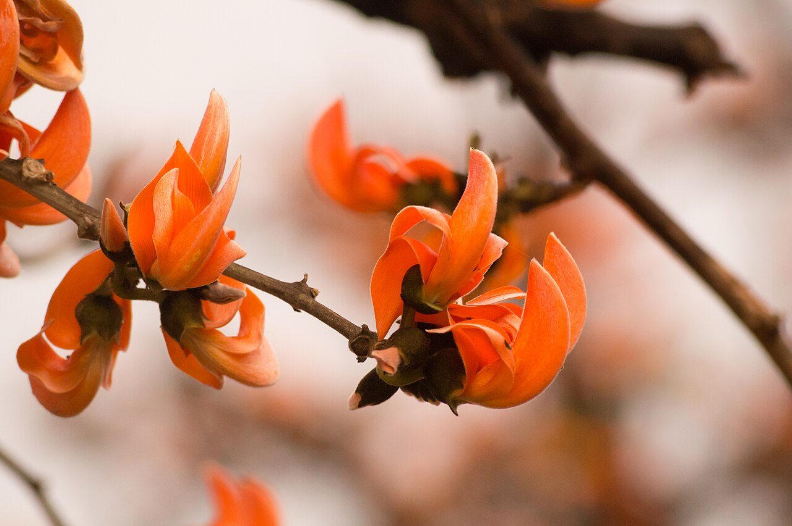
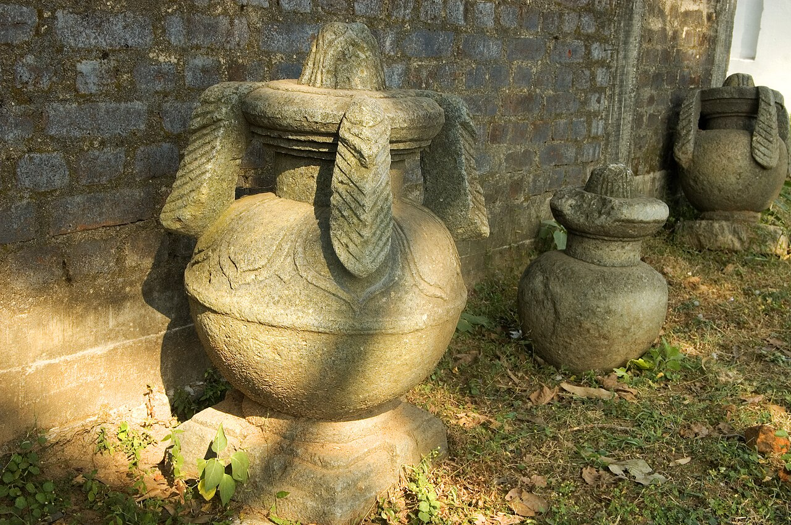
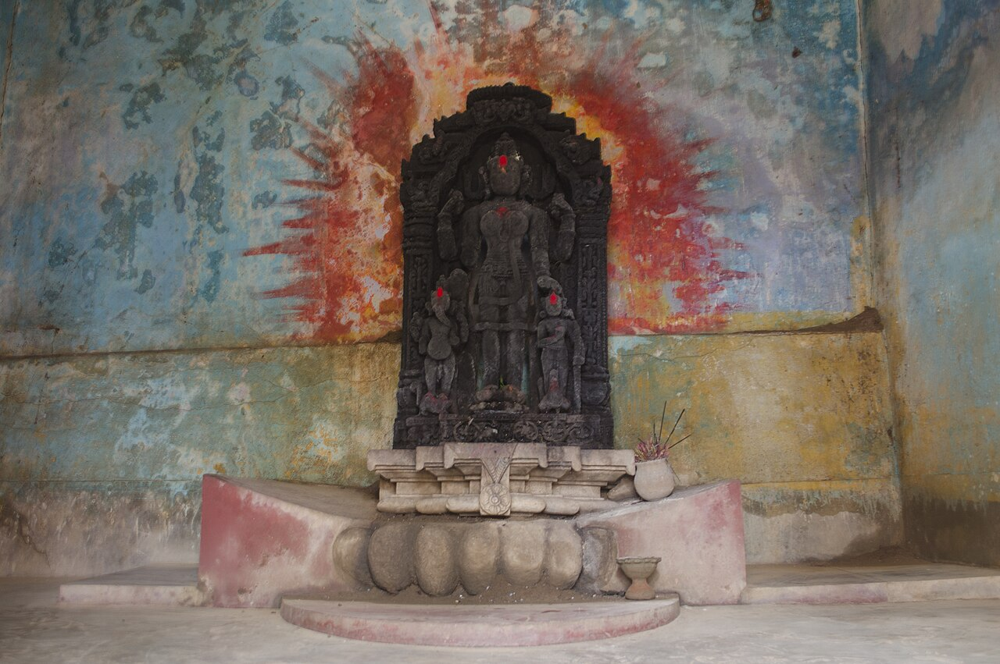
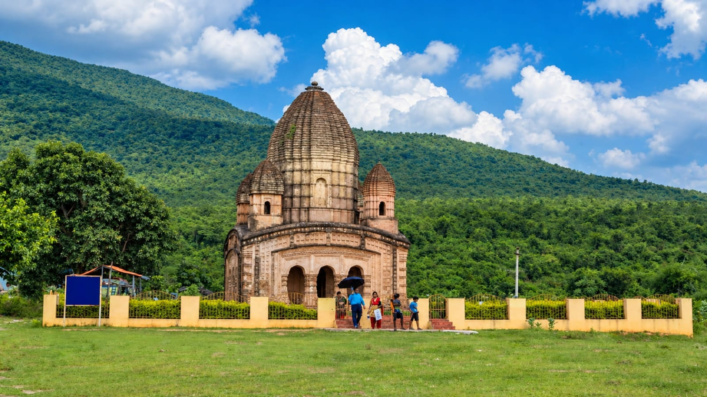

Geography
WHERE DOES IT LOCATED ?

Map of Purulia: Western part of West Bengal
Location of Purulia
Purulia is located in the western part of westbengal.
"Ranga matir desh" • One of the most beautiful and culturally rich districts in West Bengal
Today i am going to give a presentation on my district "PURULIA". One of the most beautiful and culturally rich districts in westbengal.Purulia is also known as "Ranga matir desh" because of its red soil.

Purulia is located in the western part of westbengal.

Pakbirra: Ancient Jain Tirthankara colossus & relics in Purulia.

Deulghata: Ancient stone and terracotta temple ruins connected with the ancient history.
During british rule , the area went through several administrative changes. Like In 1833 , a district called "Manbhum" was created .At first, its headquater is at Manbazar .But in 1838,the headquarter was moved to present day Purulia.Later Manbhum became a very large district and included areas that are now part of westbengal,jharkhand .After independence Manbhum was divided in 1956, as a result the present purulia was formed om 1st Nov 1956 as a part of wesrbengal.
In 1833 , a district called "Manbhum" was created .At first, its headquater is at Manbazar .
But in 1838,the headquarter was moved to present day Purulia.
Later Manbhum became a very large district and included areas that are now part of westbengal,jharkhand .
After independence Manbhum was divided in 1956, as a result the present purulia was formed om 1st Nov 1956 as a part of wesrbengal.

Over 4 lakhs of trees planted all around the hill.

Earlier the hill was mostly rocky and barren.

Almost year a heard of elephants come and stay in our forest for some months.
Local villagers with help of a Japan society named "Hissomo forest foundation" planted over 4 lakhs of trees all around the hill.
Earlier the hill was mostly rocky and barren.
Almost year a heard of elephants come and stay in our forest for some months.
First of all "Ayodhya Hills" ,the most famous tourist places in purulia.This is famous because of the beatifull hills,forest,natural scenary,adventure activites like treaking and rock climbing .And the next place is "Ghar panchakot", this is a historical place related to panchakot kings.
There are so many places in Purulia like "Delughata","Pakbrirra","Telkiupi".
There is famous village "chaarida", it is famous because for making chhaou mask. it is a small village near Ayodhya hill.
 Ayodhya Hills
Ayodhya Hills
First of all "Ayodhya Hills" ,the most famous tourist places in purulia.This is famous because of the beatifull hills,forest,natural scenary,adventure activites like treaking and rock climbing .
 Natural Scenary
Natural Scenary
Beatifull hills,forest,natural scenary,adventure activites like treaking and rock climbing.

Historical PlaceAnd the next place is "Ghar panchakot", this is a historical place related to panchakot kings.
.jpeg) Chaarida Village
Chaarida Village
There is famous village "chaarida", it is famous because for making chhaou mask. it is a small village near Ayodhya hill.
 Mukhos Gram
Mukhos Gram
It is famous because for making chhaou mask. it is a small village near Ayodhya hill.
 Artisans
Artisans
Famous village for making chhaou mask near Ayodhya hill.
There are so many places in Purulia like "Delughata","Pakbrirra","Telkiupi".
There are so many places in Purulia like "Delughata","Pakbrirra","Telkiupi".
Chhau is traditional masked dance . It combines dance,acting,music and strong body movements.The dancers were colourful costumes and beautiful mask.Dhamsa,madal and other traditional instruments are commonly used during performances.Chhau is not just for entertainment , it is an important part of the culture and festivals of purulia.Chhau was inscribed on UNESCO'S Representative list of the intangible cultural heritage of humanity in 2010.

The dancers were colourful costumes and beautiful mask.

It combines dance,acting,music and strong body movements.

Traditional masked dance of Purulia.

Strong body movements and dynamic performance.

An important part of the culture and festivals of purulia.
The chhau mask are one of the most special parts of chhau.The whole mask is make by hand , all the tiny design .so it takes lot of time to make.Chhau mask is also a registered Geographical indication handcraft of westbengal.


There many freedom fighter are from Purulia.Few of them are "Atul chandra","Labanya prabha","Arun chandra".

Prominent freedom fighter from Purulia and leader of the freedom movement.
Renowned woman freedom fighter of Purulia who fought dedicatedly for independence.
Valiant freedom fighter and youth organizer from Purulia.